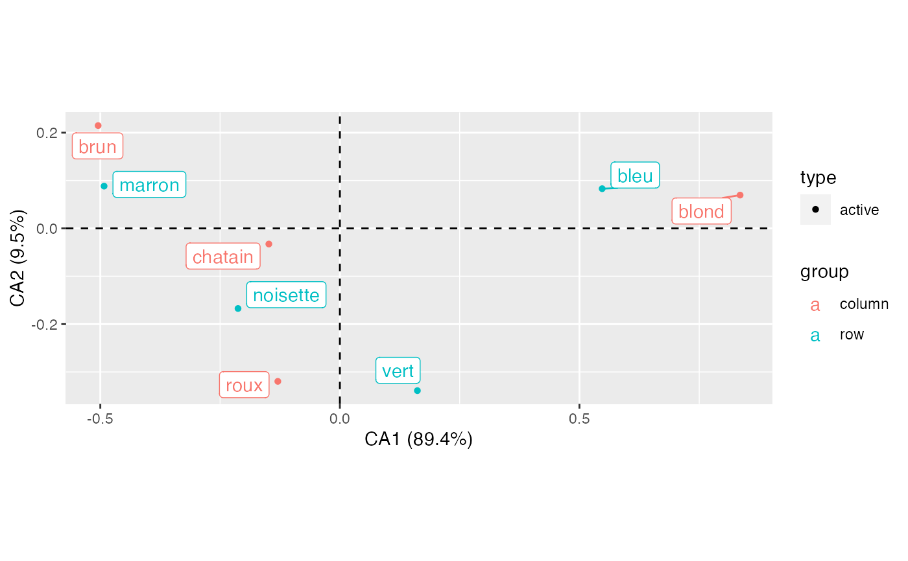
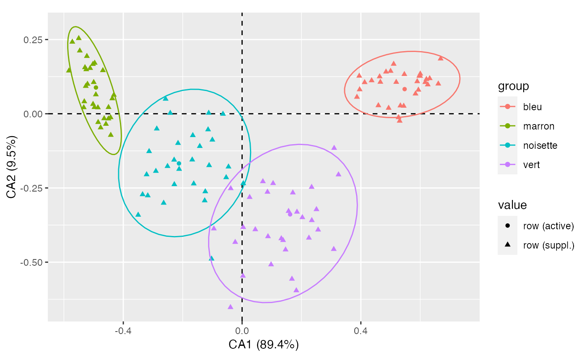
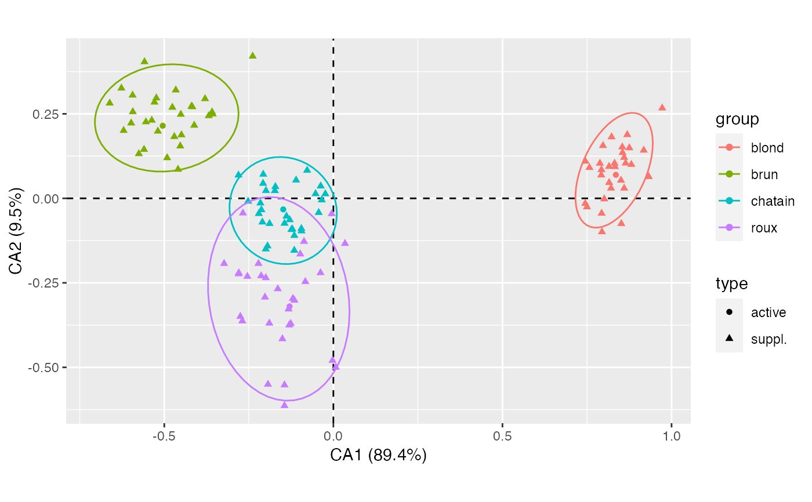
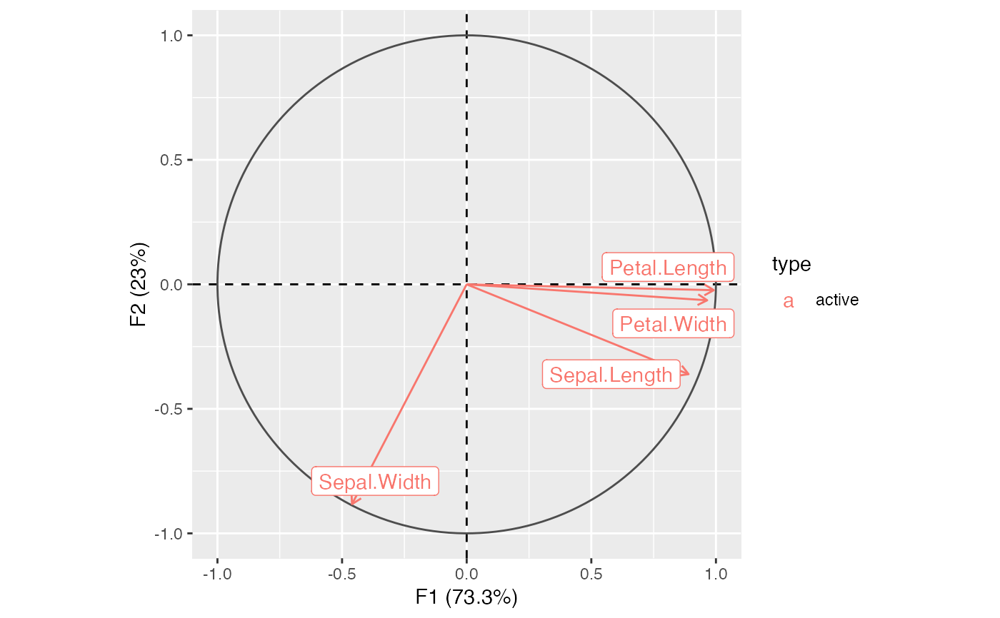
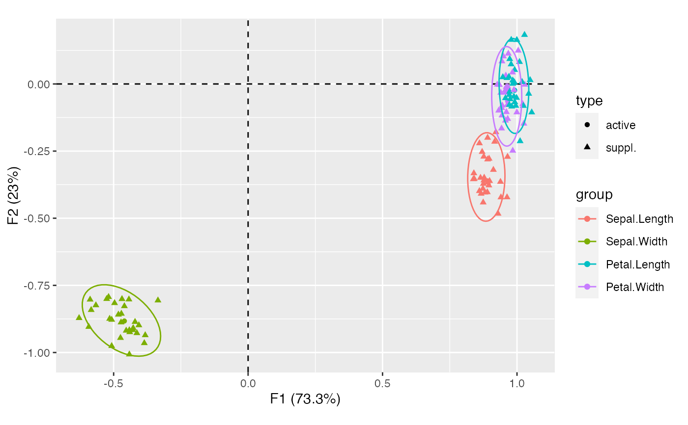

Checks analysis with partial bootstrap resampling.
bootstrap(object, ...) # S4 method for CA bootstrap(object, n = 30) # S4 method for PCA bootstrap(object, n = 30)
| object | |
|---|---|
| ... | Currently not used. |
| n | A non-negative |
A BootstrapCA or BootstrapPCA object.
Lebart, L., Piron, M. and Morineau, A. Statistique exploratoire multidimensionnelle: visualisation et inférence en fouille de données. Paris: Dunod, 2006.
N. Frerebeau
#>## Partial bootstrap on CA ## Data from Lebart et al. 2006, p. 170-172 color <- data.frame( brun = c(68, 15, 5, 20), chatain = c(119, 54, 29, 84), roux = c(26, 14, 14, 17), blond = c(7, 10, 16, 94), row.names = c("marron", "noisette", "vert", "bleu") ) ## Compute correspondence analysis X <- ca(color) ## Plot results plot(X) + ggrepel::geom_label_repel()
## Bootstrap (30 replicates) Y <- bootstrap(X, n = 30) ## Plot with ellipses plot_rows(Y) + ggplot2::stat_ellipse()

#>
## Bootstrap (30 replicates) Y <- bootstrap(X, n = 30) ## Plot with ellipses plot_columns(Y) + ggplot2::stat_ellipse()